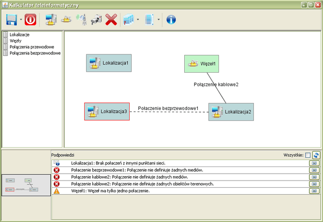
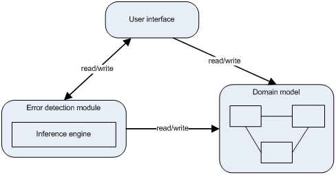
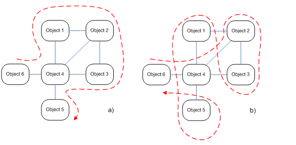
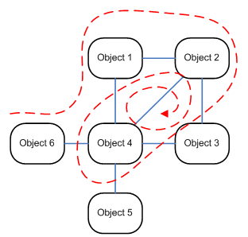

Machine Reasoning in CAD Applications
This article presents the use of inference engine to implement mechanisms that automatically detect design errors and generate design tips in CAD (Computer Aided Design) applications. The article discusses a number of implementation issues, that can be avoided by using an inference mechanisms.
Introduction
Nowadays a growth in productivity of an experienced designer is possible only through the use of more advanced software such as CAD (Computer Aided Design) applications. Historically, the first such programs created in the sixties of the twentieth century (such as Sketchpad), were created mainly to drawing. However, the basic and most important advantage of these applications over a piece of paper was easiness of editing individual elements without having to redraw the whole project.
As the computers became more efficient, new capabilities have been added to CAD applications like an automation of some design steps. Vendors made available many ready to use components, and pushed more and more tasks into a machine – complicate calculation, analysis, etc. In the mean time CAD applications became better and better at automatic verification of design correctness. Today they also enforce a use of good design practices on their users.
In contemporary CAD applications the user interface design and advancement in automatic verification of design errors are among top factors that decide about their commercial success. The problem is that implementation of an automatic verifications mechanisms is not a trivial task that, if not done carefully, can introduce many errors and drag performance down to an unacceptable level.
WAN Calculator
WAN calculator was an application helping to automate parts designing wide area networks. Figure 1 shows application’s main window. The application allows designing wide area networks as graph structures, where vertices represent locations (places where IT infrastructure is located) and edges represent connections between locations.

Analysis Abstract
In course of requirements analysis we found that the most important factor that eases work of a wide area network designer is an automatic and interactive error detection mechanism.
At the implementation stage we decided, that error messages generated by this mechanism should be displayed in a dedicated area at the bottom of application’s main window (visible at figure 1), because such solution is common in many integrated design environments.
WAN Calculator’s inner architecture
Figure 2 shows a simplified architecture diagram of our application. There are three main components visible:
- domain model, that contains all classes describing wide area networks;
- error detection module, that contains an inference engine and has access to both domain model and user interface module;
- user interface.
The division into three modules allowed us to define clear interfaces between each part of an application.

The most common way of modeling application’s domain is object oriented approach. This approach makes a programmer map real world objects into programming language objects. For example in our application we model physical locations like buildings as objects of class Location, and connections between locations as object of class Connection.
For CAD applications of this type, a very important factor is an high efficiency of error detection mechanism, which allows it to run in background without noticeable application slowdown. Because of our experience in artificial intelligence, we decided to use an inference engine as a core of error detection mechanism. The choice of Java as an implementation language made Drools the most suitable implementation, because it can operate directly on arbitrary Java objects.
Implementation Problems
The implementation of error detection mechanism in a CAD application causes problems that need to be solved in order to bring positive user experience. The most important of those problems are:
- error detection speed;
- loose coupling between modules;
- separation of error detection mechanism and domain object model;
- source code readability.
During analysis phase we fund that in such type of application, a probability of user error is very high, but we were unable to penetrate the whole error space. This made us to define only an initial set of most common design errors that user can make, and to prepare the application for easy extension.
The complexity and abundance of domain object graph may cause some nontrivial obstacles in designing error detection mechanism such as:
- efficient navigation through object graph;
- algorithm falling into infinite loop;
- deformation of domain classes’ interfaces;
- proliferation of programming languages.
All those problems and their solution are discussed further.
Efficient Navigation through Object Graph
The strategy of navigation through domain object graph seems to be the most important problem. It’s solution has the greatest impact on error detection speed. Both selection of startup object and path along which an error detection algorithm will follow through graph have remarkable impact on efficiency and complexity of code. Figure 3 presents two extreme paths where path a) is optimal and b) is the worst because it involves multiple inspections of the same object.

The choice of DRools inference engine which is able to operate directly on arbitrary Java objects, made the graph navigation problem an implementation detail. References to all domain objects are being passed to inference engine, which heavy optimized algorithms enable it to work interactively without noticeable computation overhead. The forward chaining algorithm which powers JBoss Rules inference engine can potentially cause considerable memory overhead. This overhead may cripple application’s performance but performance tests that used projects containing about 200 interconnected localizations revealed no noticeable performance loss even on modest desktop hardware.
Algorithm falling into infinite loop
The second problem with graph navigation is possibility of error detection algorithm to fall into an infinite loop. This applies especially to "naive implementations" of navigation algorithms with sloppy cycles detection. Figure 4 presents a situation that can take place during processing an object graph with cycles.

A well tested, production ready inference engine like JBoss Rules, lets us ignore this problem entirely because it handles cycle detection internally.
Deformation of Domain classes’ Interfaces
Implementing error detection mechanism in domain classes causes the deformation of their interfaces by introduction of error detection methods. This introduces so called “leaky abstractions”. Another unwanted side effect is tight coupling of domain classes. Mixing error detection code and domain classes code is generally a bad idea because these are two separate aspects that should be kept separately.
The use of inference engine allowed us to separate error detection code from domain classes. The physical separation of those two aspects has a positive impact on program architecture and code readability. This solution is also more flexible in situations when domain model needs to be modified. Adding new error definitions is also quite simple.
Unfortunately, full separation of error detection code and domain classes code is sometimes impractical or even impossible. Sometimes it is easier and more elegant to implements some imperative calculations in domain classes and use a calculated result in logic formula than to force those calculations into the logic formula itself. In every such situation a programmer is ought to weight all pros and cons and choose the more sensible and readable solution.
Application's source code
Hand implementing error detection mechanisms causes substantial complexity and low readability of code covering error definitions. It is simple to transform an error definition like:
"negative value of price is incorrect"into a single if-then statement like
if (price < 0) {
throw new Exception(…);
}.
It is, however, more difficult to transform a definition like:
"a network containing two localizations that are not directly or indirectly connected is erroneous"into a readable and comprehensible code, that leaves no doubt about how and if it works.
The use of inference engine and logic programming solves this problem, because all error definitions, either simple or complex take shape like:
If
error condition
Then
present error messageFor example a formula that detects unconnected network points (localizations) looks like:
rule "Unconnected network point"
when
$np : NetworkPoint()|
not (exists Connection (point1 == $np || point2 == $np))
then
insertLogical (Hint.newInfo($np, "No connection with other network points."));
end,and it can be easily translated to natural language into:
If
there exists a network point and there are no connections between it and other network points,
then
show message „Unconnected network point”.
A declarative expression of error definition allows for easier detection of implementation errors, that otherwise would be hidden among many Java procedures.
The insertLogical keyword used in the example causes a conditional
insertion of object containing an error message into inference engine’s working
memory. This object will be kept in this memory and displayed to the user as
long as the condition holds true.
The biggest drawback of this solution is the necessity of using two programming languages and two programming paradigms. Domain classes are expressed in imperative Java, and error conditions are expressed in declarative logic. This dualism forces programmers to master both languages and paradigms.
Summary
Presented solution worked well in our application and allowed us to implement an efficient and flexible error detection mechanism that can be used in any CAD application. The same error detection mechanism can be used for automatic error correction, though it’s potential user interaction issues have not been researched yet.